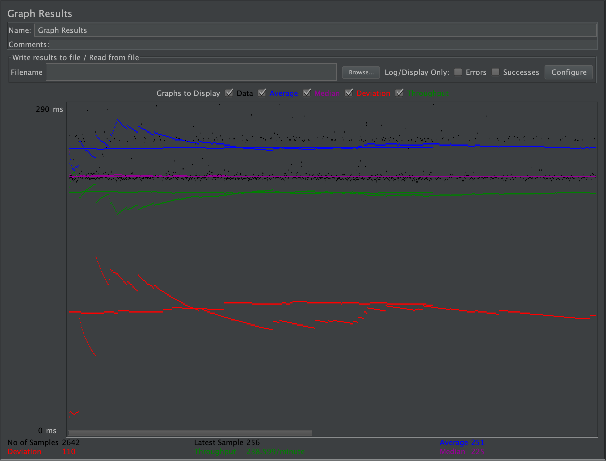
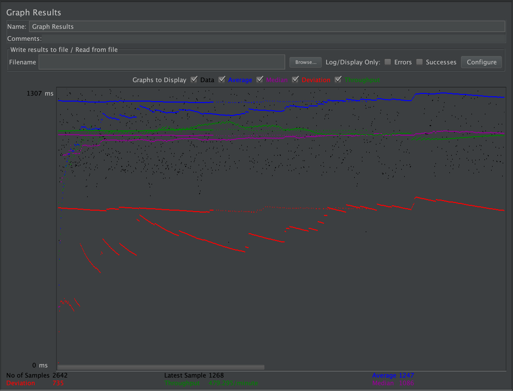
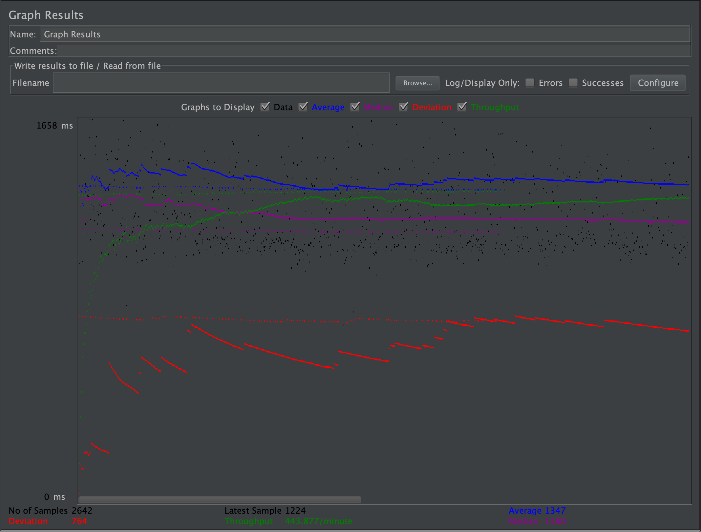
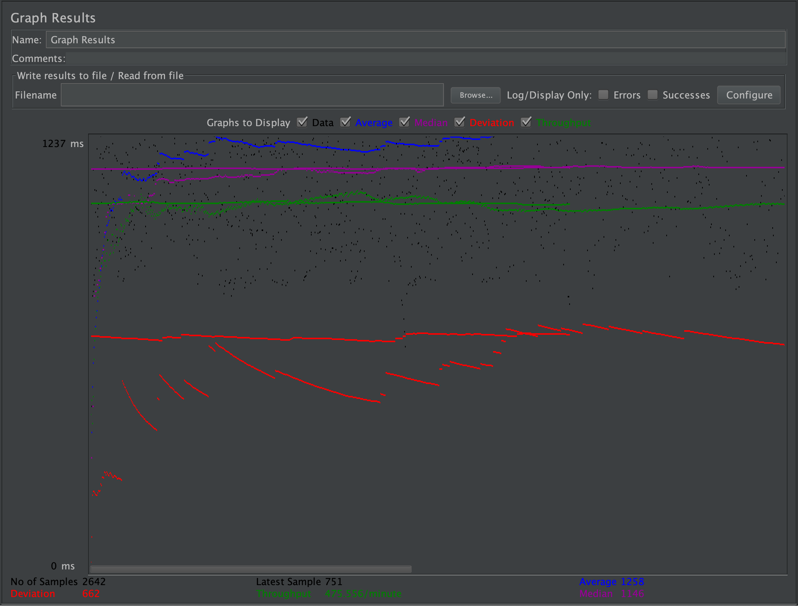
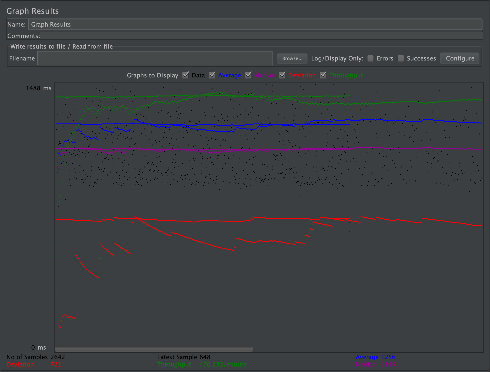
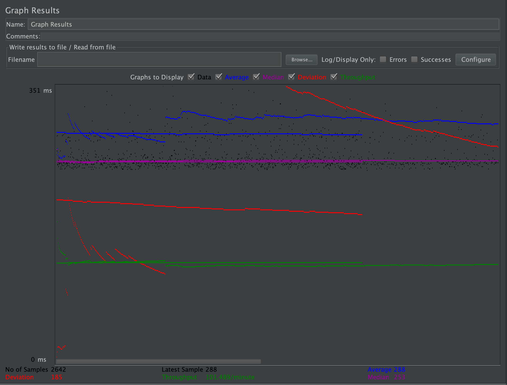
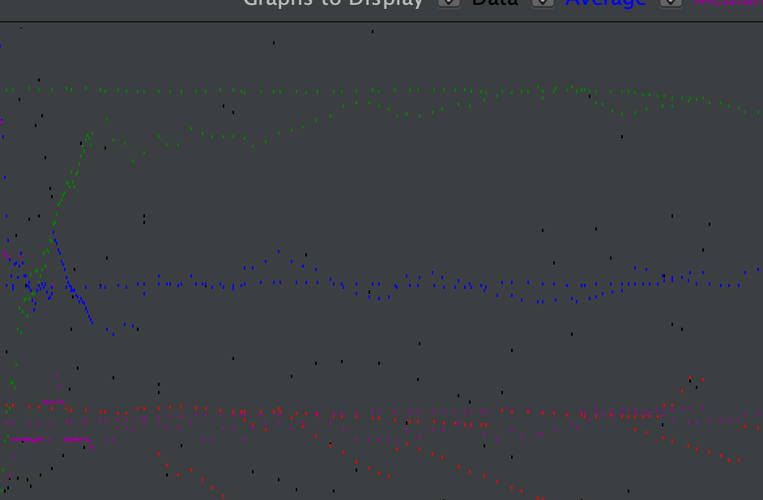
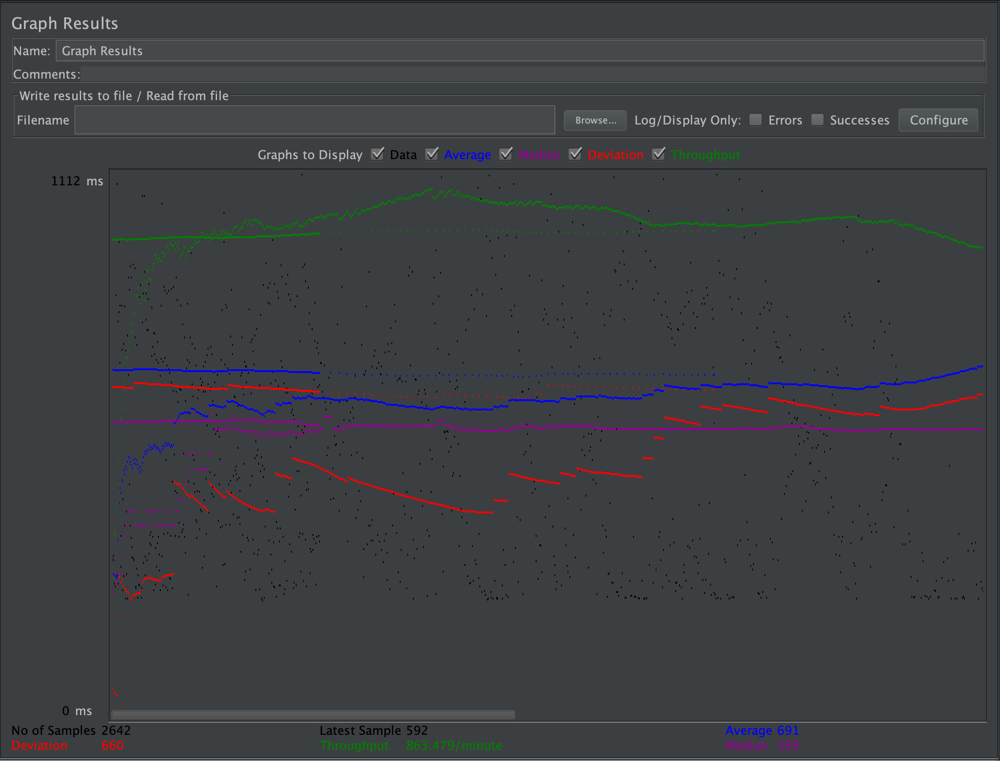
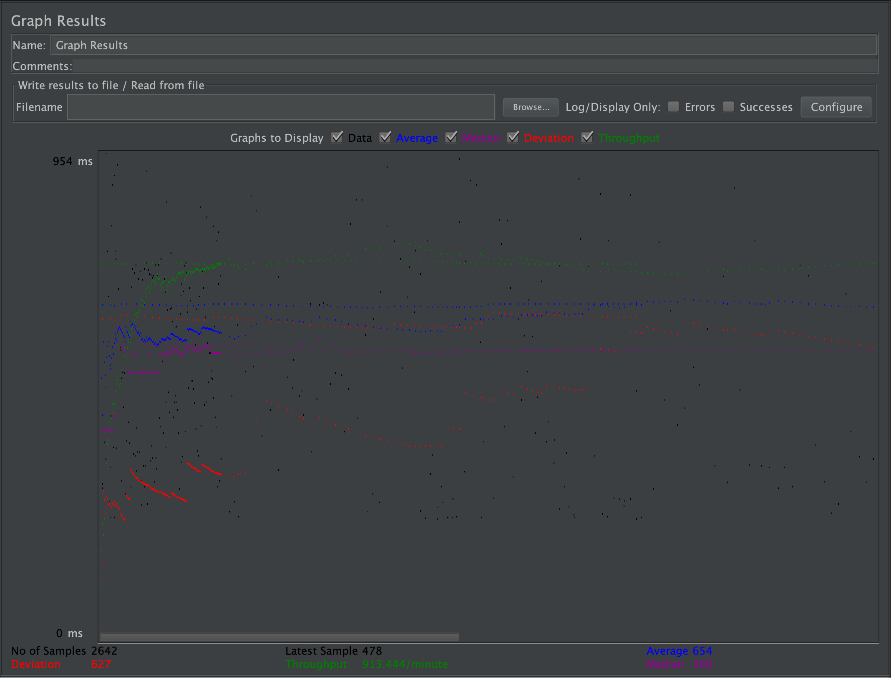

| Single-instance version cases | Graph Results Screenshot | Average Query Time(ms) | Average Search Servlet Time(ms) | Average JDBC Time(ms) | Analysis |
| Case 1: HTTP/1 thread |  | 251 | 129.37813021364744 | 128.5785195515841 | This is an expected result since there is only one user being simulated in a single server. |
| Case 2: HTTP/10 threads |  | 1247 | 1158.828846264419 | 1028.5412385873274 | This result highlights the importance of load balancing in a server. You can see that the average query time is very high, it skyrocketed from a single thread. |
| Case 3: HTTPS/10 threads |  | 1347 | 1123.214944806255 | 1059.8857054524776 | Like the last result, it seems as though https makes the overall queries a bit slower. |
| Case 4: HTTP/10 threads/No prepared statements |  | 1258 | 1197.2645615320878 | 924.3150985178717 | Here, not using prepared statements makes a small a big difference when it comes to the execution of the queries. |
| Case 5: HTTP/10 threads/No connection pooling |  | 1256 | 1195.8559086161656 | 1049.2647684638505 | This case and case 4 are very similar. It seems as though connection pooling does not have too much of an effect on the overall query time. |
| Scaled version cases | Graph Results Screenshot | Average Query Time(ms) | Average Search Servlet Time(ms) | Average JDBC Time(ms) | Analysis |
| Case 1: HTTP/1 thread |  | 288 | 128.99859780503655 | 128.48090662225832 | This is an expected result, we are only simulating one user so load balancing isnt being used much here. |
| Case 2: HTTP/10 threads |  | 409 | 298.91043092445165 | 297.4912430938262 | Now we start to see the real power of load balancing. The average query time has drastically gone down and has made query executions faster. |
| Case 3: HTTP/10 threads/No prepared statements |  | 691 | 598.160412303818 | 584.6185567112103 | In this case, the use of no prepared statements has actually caused query times to go up. |
| Case 4: HTTP/10 threads/No connection pooling |  | 654 | 717.3240115215272 | 712.7188360625507 | Lastly, no connection pooling has also affected the query times here. This case though there is a drastic increase in the TS and TJ times. |